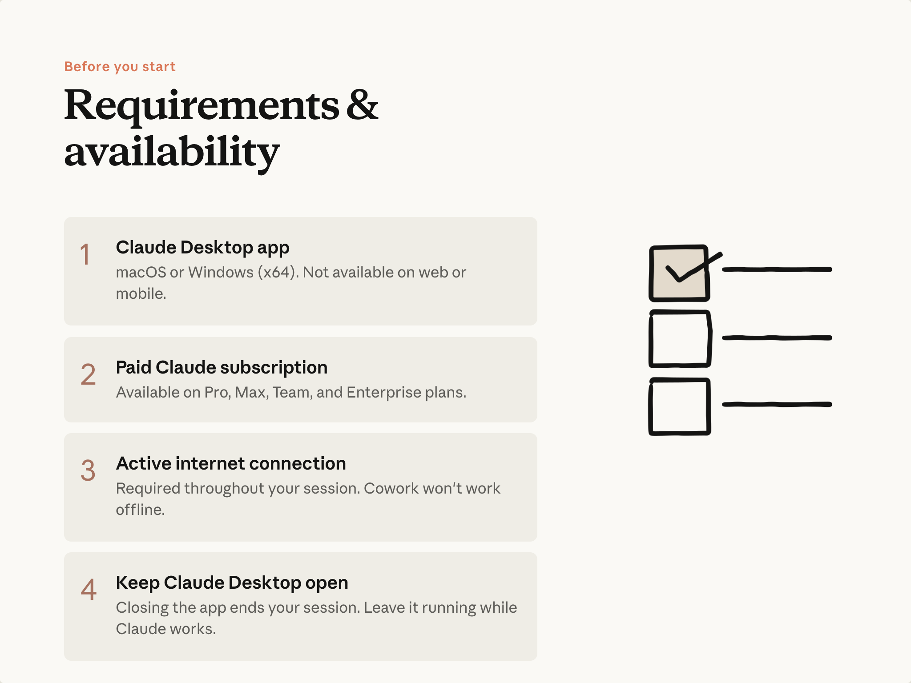
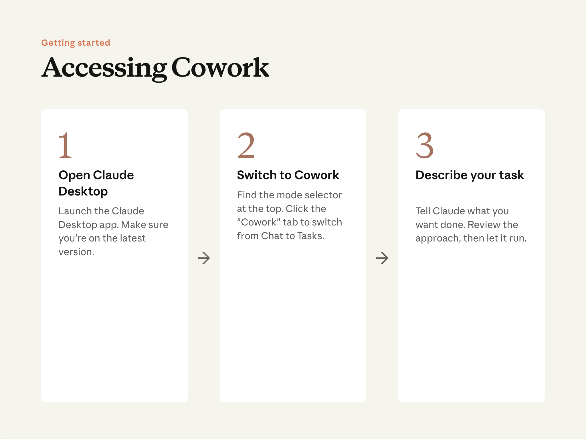

예상 소요 시간: 7분
학습 목표
이 레슨을 마치면 다음을 할 수 있습니다:
- Cowork에 접속하고 작업 폴더를 지정하기
- 작업이 저장된 도구와 페이지 연결하기
- 필요한 사전 준비 사항 이해하기
필요한 것

Cowork는 Claude 데스크톱 앱 에서 실행됩니다. 유료 Claude 플랜에서 사용 가능하며— 플랜 세부 정보를 확인 하여 현재 사용 가능 여부를 알아보세요.
Cowork 열기

Claude Desktop을 여세요. 앱 상단에서 Chat, Cowork, Code 사이를 전환할 수 있는 모드 선택기를 찾을 수 있습니다. Cowork 를 클릭하세요.
Cowork가 옵션으로 표시되지 않는다면, 유료 플랜을 사용 중인지, 데스크톱 앱이 최신 버전인지 확인하세요.
Claude에 폴더 지정하기
이것이 채팅과의 핵심 차이점입니다: Claude에게 작업 디렉터리를 지정하면, Claude는 그곳의 파일을 직접 읽고, 생성하고, 편집할 수 있습니다. 업로드도, 다운로드도 필요 없습니다.
폴더에서 작업 을 클릭하고 컴퓨터의 디렉터리를 선택하세요. Claude는 내부의 모든 파일(PDF, 스프레드시트, Word 문서 등)을 읽고 완성된 작업을 같은 위치에 저장합니다. 변경하기 전에 항상 허가를 요청합니다.
반복적으로 작업하는 경우, 프로젝트를 통해 해당 폴더에 지침과 기억을 연결하여 모든 세션에서 유지할 수 있습니다. 이는 레슨 4에서 다룹니다.
도구 연결하기
커넥터는 Cowork를 작업이 저장된 서비스—Slack, Google Drive, Gmail, Calendar 등—에 연결합니다. 한 번 설정해두면 이후 모든 작업에서 활용할 수 있습니다.
목록은 Cowork의 맞춤 설정 영역에서 찾을 수 있습니다. 사용하는 도구를 켜세요. 연결되면 프롬프트에서 자연스럽게 참조할 수 있습니다: 스레드를 복사하는 대신 "Slack에서 팀이 이에 대해 뭐라고 했는지 확인해줘"처럼 사용하면 됩니다. Claude는 연결된 도구에서 직접 작업할 수도 있습니다—Gmail에서 이메일 초안 작성, Drive에 파일 저장 등.
Chrome에 Claude 추가하기
커넥터가 없는 페이지—내부 대시보드, 공급업체 포털, 로그인이 필요한 웹 앱—에도 작업이 있을 수 있습니다. Chrome의 Claude 가 바로 이런 경우에 Cowork가 접근하는 방법입니다. 같은 맞춤 설정 영역에서 설치하고, 사이트별로 권한을 부여하면 Cowork가 페이지를 열고, 콘텐츠를 읽고, 작업의 일부로 상호작용할 수 있습니다.
단독으로 사용할 때 이 확장 프로그램은 현재 탭을 읽는 사이드바 도우미입니다. 자동화는 Cowork가 이를 구동할 때 이루어집니다. 자세한 안내는 Chrome 튜토리얼 을 참고하거나, 확장 프로그램과 로컬 파일을 함께 사용하는 방법은 브라우저 차트와 폴더 데이터로 분석 구축하기 를 참고하세요.
시작하기엔 폴더 하나로 충분합니다. 커넥터와 Chrome 확장 프로그램은 필요할 때 준비하면 됩니다. 플러그인과 예약 작업은 이후 레슨에서 다룹니다.
직접 해보기
Claude Desktop을 열고 Cowork로 전환한 다음, 작업하고 싶은 폴더를 지정해보세요. 첫 번째 작업은 다음 레슨에서 실행합니다.
다음 단계
다음으로는 핵심 루프를 배웁니다: 원하는 것을 설명하고, 명확화 질문에 답하고, Claude가 작업하도록 두고, 완성된 파일을 열어보세요.
자세한 설정 도움말은 헬프 센터를 참고하세요: Cowork 시작하기 . Team 및 Enterprise 관리자는 팀/엔터프라이즈용 Cowork 도 검토하세요.
피드백
피드백을 여기 에서 공유해주세요.
감사의 말 및 라이선스
Copyright 2026 Anthropic. All rights reserved.